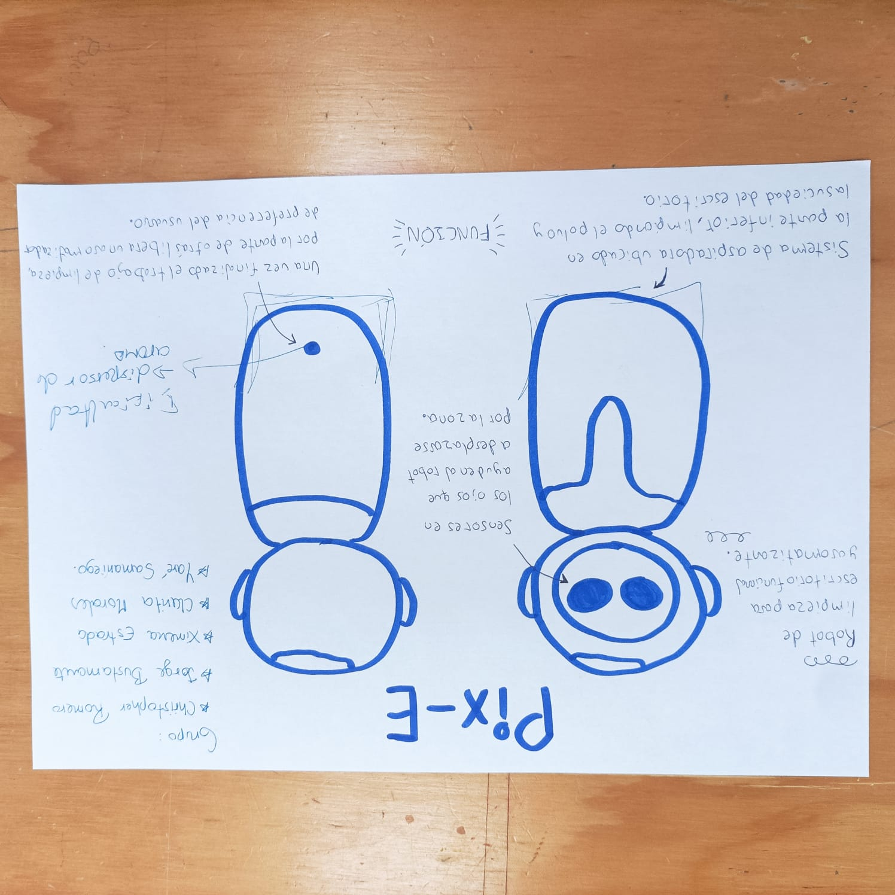

Pix-EBot
En nuestro último ejercicio de trabajo en equipo, dimos vida a una idea innovadora: el desarrollo de un robot de limpieza para escritorio que incluye un aromatizador. Este dispositivo compacto está diseñado para mantener tu espacio de trabajo impecable y perfumado. Entre sus características más destacadas se encuentran:
Limpieza eficiente: Equipado con sensores avanzados, el robot se desplaza por el escritorio, eliminando el polvo y las partículas pequeñas.
Aromatización integrada: Cuenta con un sistema que difunde suavemente fragancias, creando un ambiente agradable que mejora la concentración y el bienestar.
Diseño compacto: Su tamaño reducido lo hace ideal para cualquier escritorio, sin interferir en tu área de trabajo.
Funcionamiento silencioso: Desarrollado para operar discretamente, no interrumpe tus actividades ni llamadas importantes.
Autonomía energética: Con una batería de larga duración, puede realizar varias sesiones de limpieza sin necesidad de recarga constante.
Personalización: Ofrece opciones para seleccionar diferentes fragancias y programar horarios de limpieza.
